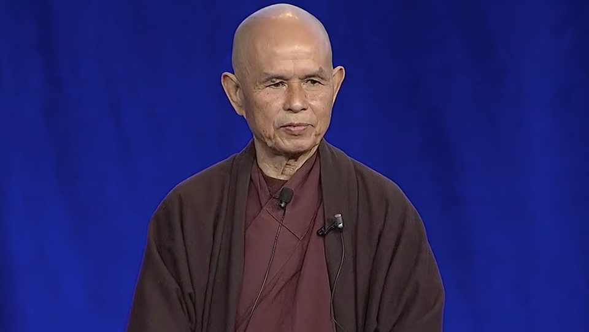

As part of his vision of engaged Buddhism, Thich Nhat Hanh had the opportunity to deeply understand and engage with the corporate world. He started a true and sincere dialogue with the business world to be able to help leaders, managers and co-workers to be happy and free in their workplace. As businessmen, businesswomen, leaders, managers and co-workers, Buddhists & non-Buddhists, we are determined to practice mindfulness and compassion at work so that we may change the workplace in a developing, caring and balanced environment. Inspired by the teachings of Zen Master and peace activist Thich Nhat Hanh, we believe that happy managers and co-workers can change the world and make a true difference for the future.
We come together to practice mindfulness in order to take care of ourselves, nourish happiness and contribute to building a better future. We want to help our world which is overloaded with stress, judgement, intolerance, discrimination, craving, anger and despair. Seeing the environmental degradation caused by our society, we want to live and work in such a way that our planet Earth can survive for a long time.
Practicing mindfulness, concentration and insight, enables us to cultivate tolerance, non-discrimination, understanding and compassion in ourselves and the world.